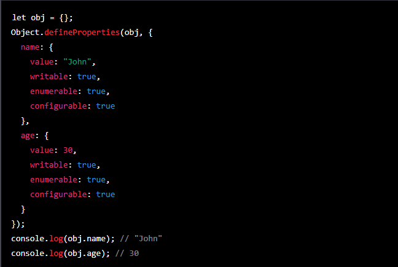

Temario de la clase:
- Objetos
- Constructores
- Metodos y Operaciones
- Clases
Funciones constructoras:
Una función constructora es un tipo de función especial en JavaScript que se utiliza para crear y inicializar objetos. Cuando se llama a una función constructora con la palabra clave new, se crea un nuevo objeto y se le asigna el prototipo de la función constructora. Además, la función constructora se ejecuta con el nuevo objeto como su contexto de ejecución (es decir, el valor de this dentro de la función es el nuevo objeto).
Para crear una función constructora, se debe utilizar la palabra clave function seguida de un nombre de función (que debe comenzar con una letra mayúscula) y una lista de parámetros entre paréntesis. A continuación, se escribe el cuerpo de la función, que suele incluir la inicialización de las propiedades del nuevo objeto. Por ejemplo:
Para utilizar una función constructora, se debe llamar a la función con la palabra clave new. Esto creará un nuevo objeto y ejecutará la función constructora con ese objeto como su contexto de ejecución. A continuación, se pueden utilizar las propiedades y métodos del objeto creado. Por ejemplo:
Una de las principales ventajas de las funciones constructoras es que permiten crear objetos personalizados que comparten un conjunto común de propiedades y métodos. Por ejemplo, podríamos crear una función constructora para crear objetos Person que tienen un nombre y una edad, y luego utilizar esa función constructora para crear diferentes personas con diferentes valores para esas propiedades:
Además de las propiedades y métodos que se definen en el cuerpo de la función constructora, los objetos creados por una función constructora también heredan las propiedades y métodos del prototipo de la función constructora.
Una vez que se ha creado una función constructora, es posible crear métodos para los objetos creados por esa función de dos maneras diferentes: agregándolos al prototipo de la función constructora o agregándolos directamente al objeto creado.
Para agregar un método al prototipo de una función constructora, se puede utilizar la sintaxis siguiente:
De esta manera, todos los objetos creados a partir de la función constructora Person heredarán el método greet. Por ejemplo:
Para agregar un método directamente a un objeto creado por una función constructora, se puede utilizar la sintaxis siguiente:
De esta manera, el objeto person1 tendrá el método sayHi, pero el objeto person2 no lo tendrá.
JavaScript fue creado en 1995 por Netscape, y las funciones constructoras se han podido utilizar desde entonces. Sin embargo, con el tiempo se han ido introduciendo nuevas características y mejoras en JavaScript, y es posible que algunos de los detalles de su implementación hayan cambiado a lo largo de los años.
Objetos:
Los objetos en JavaScript son una de las características más importantes y versátiles de este lenguaje de programación. Un objeto es una colección de propiedades, cada una de las cuales tiene un nombre y un valor, y puede ser de cualquier tipo de dato (incluso otro objeto). Los objetos en JavaScript son dinámicos y pueden ser modificados en tiempo de ejecución, lo que los hace muy útiles para almacenar y manipular datos.
Una de las formas más comunes de crear objetos en JavaScript es utilizando la notación literal de objetos. Para crear un objeto vacío, se escriben dos llaves vacías seguidas:
Para agregar propiedades a un objeto, se escribe el nombre de la propiedad seguido de dos puntos y el valor de la propiedad. Por ejemplo:
Las propiedades de un objeto se pueden acceder utilizando la notación de punto o la notación de corchetes. La notación de punto se utiliza para acceder a propiedades cuyo nombre es una palabra clave válida en JavaScript. Por ejemplo:
La notación de corchetes se utiliza para acceder a propiedades cuyo nombre no es una palabra clave válida en JavaScript o para acceder a propiedades cuyo nombre es dinámico (es decir, se determina en tiempo de ejecución). Por ejemplo:
Además de almacenar valores, las propiedades de un objeto también pueden ser funciones, que se conocen como métodos. Por ejemplo:
Una de las características más útiles de los objetos en JavaScript es la capacidad de crear objetos que heredan de otros objetos a través del uso de la palabra clave Object.create(). Esta función toma como argumento un objeto del que se quiere crear una nueva instancia y devuelve un nuevo objeto que hereda de ese objeto. Por ejemplo:
En este ejemplo, el objeto employee hereda de person, por lo que tiene acceso a sus propiedades y métodos. Sin embargo, también tiene sus propias propiedades y métodos adicionales.
Objetos: Metodos y Operaciones
Una vez que se ha creado un objeto, es posible añadir, eliminar o modificar sus propiedades y métodos utilizando diversos métodos y operaciones. Algunos de los métodos y operaciones más comunes son:
Object.defineProperty(): Este método permite definir una propiedad de un objeto de forma explícita. Se pueden establecer diversas opciones, como si la propiedad es enumerable o configurable, o si tiene un getter o un setter. Por ejemplo:

Object.defineProperties(): Este método permite definir varias propiedades de un objeto de forma explícita. Es similar a Object.defineProperty(), pero acepta un objeto como argumento que contiene las propiedades y opciones que se quieren definir. Por ejemplo:
Object.getOwnPropertyDescriptor(): Este método permite obtener la descripción de una propiedad de un objeto. La descripción incluye información sobre el valor, si es escribible, enumerable o configurable, y si tiene un getter o un setter. Por ejemplo:
Object.getOwnPropertyDescriptors(): Este método permite obtener las descripciones de todas las propiedades de un objeto. Es similar a Object.getOwnPropertyDescriptor(), pero devuelve un objeto con todas las descripciones en lugar de una sola. Por ejemplo:
Además de los métodos que he mencionado hasta ahora, existen muchos otros métodos y operaciones relacionados con los objetos en JavaScript. Algunos de ellos son:
Object.keys(): Este método devuelve un array con los nombres de las propiedades enumerables de un objeto.
Object.values(): Este método devuelve un array con los valores de las propiedades enumerables de un objeto.
Object.entries(): Este método devuelve un array con arrays de clave-valor para las propiedades enumerables de un objeto.
Object.assign(): Este método permite copiar las propiedades de uno o varios objetos a otro objeto. Es útil para crear un nuevo objeto a partir de varios objetos existentes.
Object.freeze(): Este método congela un objeto, lo que significa que no se pueden añadir, eliminar o modificar sus propiedades. También se congela su prototipo, por lo que no se pueden añadir ni eliminar propiedades del prototipo.
y muchos otros mas..
Clases
Son una forma de organizar el código y crear objetos con un comportamiento y estado similares. Las clases se introdujeron en JavaScript en la versión ECMAScript 6 y son una forma más clara y concisa de crear objetos y heredar de otros objetos.
Para crear una clase en JavaScript, se utiliza la palabra clave class seguida del nombre de la clase y un bloque de código que define las propiedades y métodos de la clase. Por ejemplo:
En este ejemplo, la clase Person tiene dos propiedades: name y age, y un método greet(). La propiedad name y age se inicializan a través del constructor de la clase, que es un método especial que se ejecuta cuando se crea una nueva instancia de la clase.
Para crear una nueva instancia de una clase, se utiliza la palabra clave new seguida del nombre de la clase y los argumentos necesarios para el constructor. Por ejemplo:
Una vez que se ha creado una clase, es posible añadir nuevas propiedades y métodos a la clase o modificar los existentes. Por ejemplo:
Las clases en JavaScript también pueden heredar de otras clases utilizando la palabra clave extends. Por ejemplo: